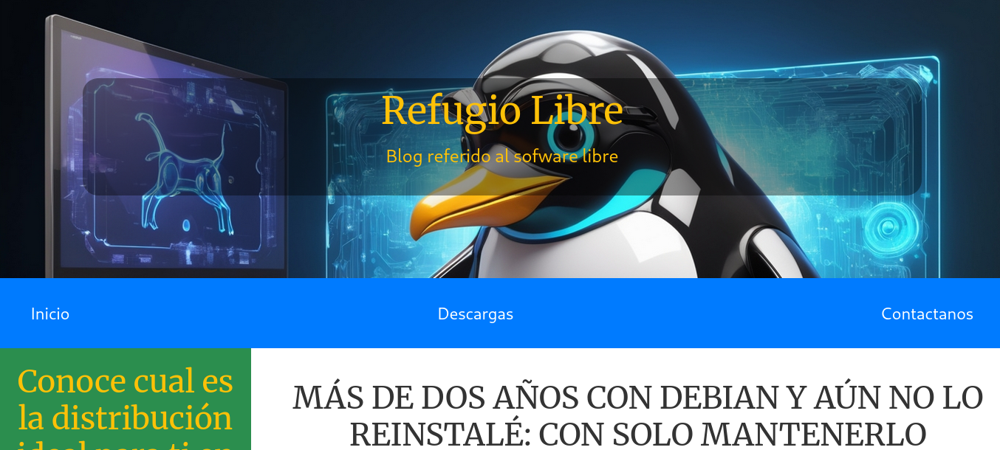

¿Por qué trabajar conmigo?
- ✔ Entregas rápidas
- ✔ Soluciones simples y efectivas
- ✔ Comunicación directa
Proyectos
Refugio Libre

Página web desarrollada para mejorar la presencia online de una organización, facilitando el acceso a la información de forma clara y profesional.
Ver sistemaSistema de Cursos (Flask)

Aplicación web para gestionar cursos, pensada para emprendimientos educativos que necesitan organizar contenido y alumnos.
Ver sistemaServicios
- ✔ Desarrollo de páginas web
- ✔ Sistemas de gestión (CRUD)
- ✔ Optimización y reparación de sitios
Sobre mí
Soy desarrollador web enfocado en soluciones simples y funcionales para emprendedores y pequeños negocios. Trabajo con Python (Flask), PHP y bases de datos SQL para crear sistemas claros, rápidos y listos para usar.
¿Necesitás una web o sistema?
Contactame y lo resolvemos rápido.
Escribirme ahora